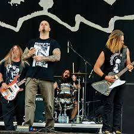

 Down é uma banda de Metal formada em 1991. A banda é composta de Phil Anselmo (ex-vocalista do Pantera e do Superjoint Ritual),
Pepper Keenan (guitarrista e vocalista de Corrosion of Conformity), Bobby Landgraf, Pat Bruders (baixista de Crowbar), e Jimmy Bower (baterista de Crowbar
e guitarrista de Superjoint Ritual e de Eyehategod). Todd Strange (Crowbar) tocou apenas no álbum NOLA (iniciais de New Orleans Louisiana, mas também um
conhecido termo para a cena do Metal de Louisiana).
Desde o seu início, Down entrou em hiato duas vezes e lançou cinco álbuns de estúdio. Em 2008, a banda começou a trabalhar em material adicional,
o que resultou em dois EPs intitulados Down IV – Part I, lançado em setembro de 2012 e Down IV – Part II, lançado em maio de 2014
NOLA
NOLA é o primeiro álbum de estúdio da banda, lançado em 19 de setembro de 1995 pela EastWest Records.
O título é a abreviação de Nova Orleans (NO) e Louisiana (LA).
NOLA foi escrito principalmente por Phil Anselmo e Pepper Keenan entre 1990 e 1995. Ao longo de 1991 a 1993, a banda lançou três demos, Originalmente, a banda
fez a primeira demo para negociação clandestina.
A demo apresentava as faixas "Losing All", "Temptation's Wings" e "Bury Me in Smoke". Em um esforço para construir uma base de fãs, a banda perguntava aos
fãs de heavy metal se eles já "ouviram falar dessa banda, Down" e entregava a eles cópias da fita sem dizer à pessoa que eles estavam na banda. Em 1992, a
banda gravou uma segunda demo, desta vez com a mesma lista de faixas do original, mas com uma introdução. Em 1993, a banda fez a Demo Collection 1992–1993,
que é uma demo de dez faixas com todas as músicas que fariam o álbum, exceto "Rehab", "Pray for the Locust" e "Underneath Everything". Eventualmente, a fita
demo original foi distribuída pelos Estados Unidos e Down fez um pequeno show em sua cidade natal. Um executivo da gravadora da EastWest Records estava7
participando do show. Quando ele descobriu quem eram os membros da banda, ele assinou um contrato de gravação com Down. A banda começou a gravar o álbum no
verão de 1994 no Ultrasonic Studios, Nova Orleans, Louisiana, e completou as sessões de gravação em janeiro de 1995.
Embora seja um álbum de sludge metal, NOLA contém traços de hardcore punk, southern rock, stoner rock e grunge. Os temas líricos do álbum se concentram em
tópicos como morte, suicídio, uso de drogas e lutas pessoais.
DownII: A Bustle in Your Hedgerow
É o segundo álbum de estúdio da banda, lançado em 26 de março de 2002. O subtítulo "A Bustle in Your Hedgerow"
é emprestado da letra de "Stairway to Heaven" do Led Zeppelin.
Down II foi o primeiro álbum da banda em sete anos desde o lançamento de NOLA, o maior intervalo entre seus três álbuns de estúdio até hoje.
Sendo um supergrupo, a banda entrou em hiato em 1996 para que os membros pudessem se concentrar em suas principais bandas (Eyehategod, Corrosion of
Conformity, Crowbar e Pantera). Down se reformou em 1999 com o baixista do Pantera Rex Brown substituindo Todd Strange. A banda queria que o álbum tivesse uma
sensação "blues", então eles se mudaram para o celeiro de Phil Anselmo, apelidado de "Nodferatu's Lair", [2] no sul da Louisiana, onde moraram e gravaram o
álbum em 28 dias sem ninguém sair de casa.
Down II não foi tão bem recebido quanto o lançamento de estreia da banda, NOLA. O revisor do Blabbermouth, Borivoj Krgin, afirmou: "Down II parece ter sido
lançado de forma mais aleatória, com grande parte do material ficando aquém do padrão estabelecido pela oferta de estréia clássica de Down". No entanto,
os críticos do Reino Unido ficaram mais entusiasmados, com Metal Hammer premiando o álbum com 8/10 e Rock Sound declarando-o "uma experiência tempestuosa
das profundezas" e classificando-o em 4/5. Apesar de suas críticas nos EUA, o álbum estreou no número 44 na Billboard 200.